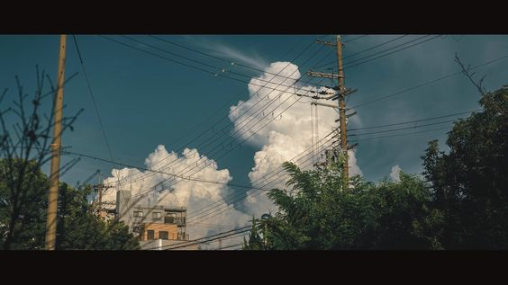

demo
/
previously on
connect notion
a self-directed study
unsupervised
written & directed by
ibnul
02
the desk
>
add
Paper
Video
Docs
Project
Repo
Habit
03
the list
>
add
04
the notebook
+ new note
05
the wall
←
→
close
episode:47
previously,
on your studies
close
connect notion
Create an integration at
notion.so/profile/integrations
and copy the token.
Make a Notion page, share it with the integration, copy its link.
provision learning log
close
a note
write it down
save note